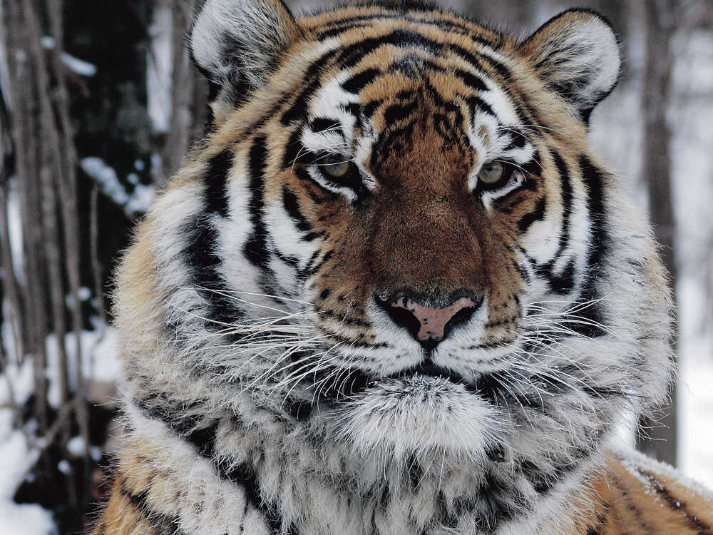

|  |
Siberian TigerThe Siberian tiger or Amur tiger is a population of tiger subspecies native to the Russian The Siberian tiger is genetically close to the now-extinct Caspian tiger. |
| Subspecies | Description |
|---|---|
| Bengal tiger | light yellow to reddish yellow with black stripes |
| Caspian tiger | having narrow and closely set stripes |
| Siberian tiger | having pale coats with few dark brown stripes |
| South China tiger | orange in colour with rhombus-like stripes |
| Indochinese tiger | smaller than tigers from India and had smaller skulls |
| Malayan tiger | skins with short and smooth hair |
|
|